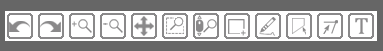
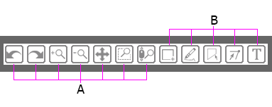

User guide¶
{kind=link}
Getting Started with BARC¶
The BARC tool is split into three distinct sections, the Annotation toolbox, the Lab book and the Report generator.
The Annotation toolbox
The Annotation toolbox will allow the user to select from various icons and annotate or markup on the displayed meteorological data. It features specific weather/forecasting icons which the user can select and place on the active content. The toolbox hosts a variety of freeform drawing tools which enable the user to mark features such as strong temperature or moisture gradients with ease as well as highlight features that they wish to draw attention to.
The Lab book
The lab book allows the user to input notes and comments which can be linked to the active content and to the users annotations and markup. Both the comments and the annotations can be saved to allow the user to revisit their previous work.
The Report Generator
The report generator provides the capability to generate case studies and model evaluation feedback reports. It features a comprehensive search and allows users to find previous reports and events from keywords and metadata.
Workspace basics¶
When you open the BARC component it will appear on the right side of the browser.
The main toolbar provides the basic tools the user requires to start using BARC.
{kind=link}
The toolbar contains two distinct sets of tools. The first set (A) are used for navigation, e.g zoom and move. The second (B) are freeform drawing tools. When you hover over any of the buttons a tooltip will give an overview of the functionilty of that button.
{kind=link}
{kind=link}
{kind=link}
{kind=link}
{kind=link}
{kind=link}
{kind=link}
{kind=link}
Drawing and type tools¶
{kind=link}
Box add tool
Use this tool to create a box to highlight features. To use this tool left click anywhere on the active content and then drag to a specfic point.
{kind=link}
Freehand drawing tool
Allows the user to draw freehand on the displayed content. Line thickness and colour can be selected.
{kind=link}
Polygon add tool
Use this tool to create polygons on the displayed content.
To add a point left click anywhere on the active content.
To move a point tap and drag the exisiting point to a new location.
To delete a point tap to select a point and then select the backspace key.
To move or delete multiple points at once:
Move selection Select point(s) with SHIFT+tap, then drag anywhere on the plot. Selecting and then dragging a specific point will move both.
Delete selection Select point(s) with SHIFT+tap, then press BACKSPACE while the mouse is within the plot area.
{kind=link}
Polygon edit tool
Use this tool to edit exsisting polygons you have created.
{kind=link}
Text add tool.
Use this tool to added text to the active content.